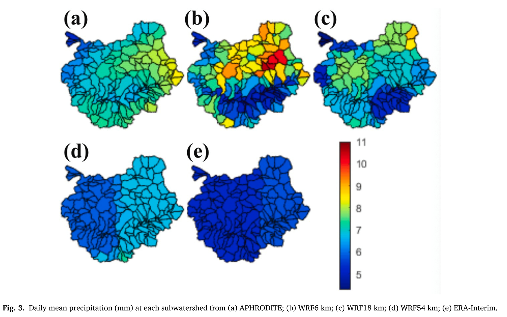
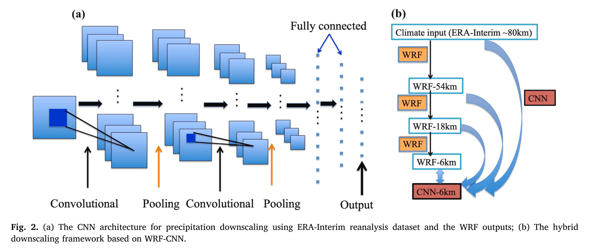
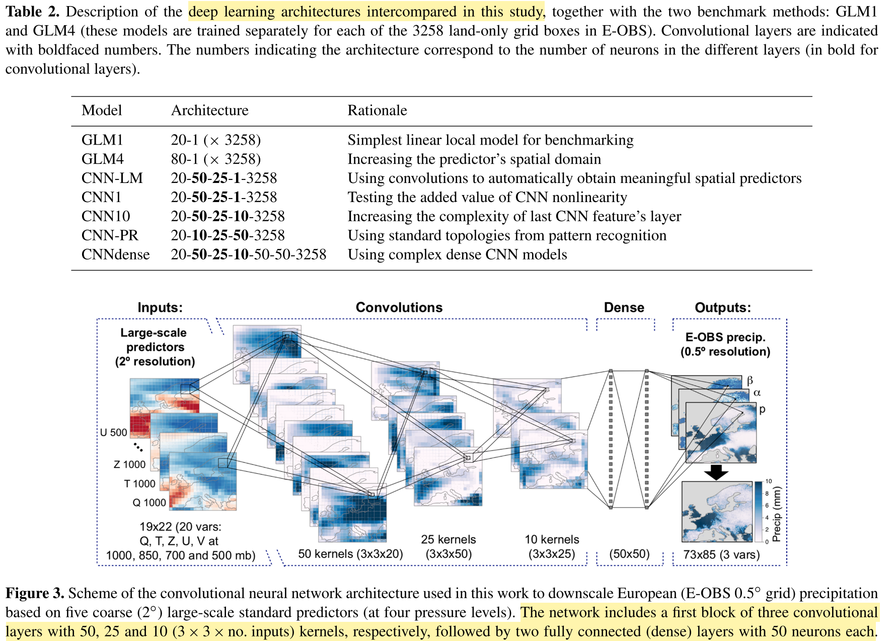
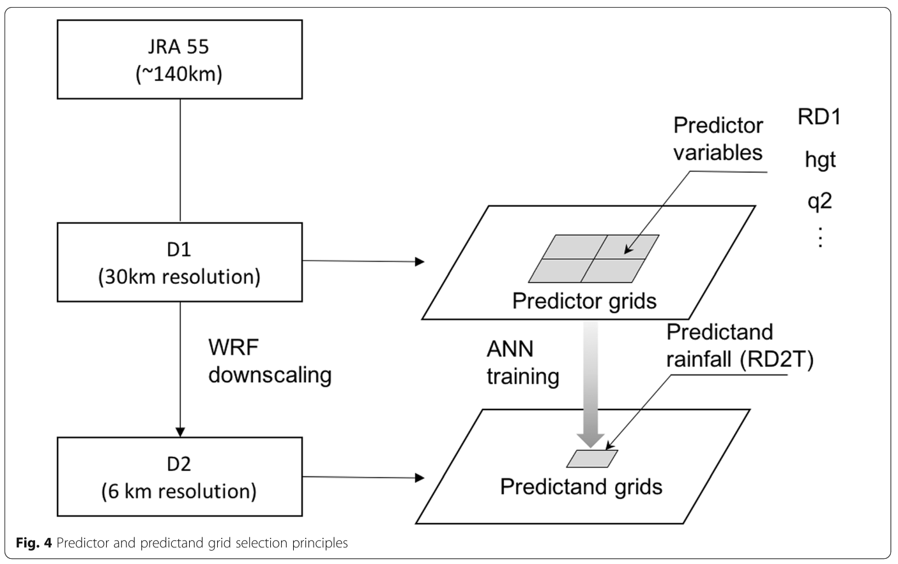

Hybrid Dynamical-Statistical Downscaling with Machine Learning Approach: A Literature Review#
Introduction#
Downscaling techniques are essential for improving the resolution of climate data, especially when addressing regional-scale climate modeling. For example, high-quality precipitation data is crucial for hydrological modeling and effective water resources management. As we face the challenges of climate change, accurate and high-resolution climate predictions are vital for understanding and mitigating impacts on water availability, agriculture, and infrastructure.
Traditional methods, such as statistical and dynamical downscaling, provide ways to refine coarse global climate models or reanalysis data, producing more localized and accurate predictions. With the growing application of machine learning (ML) and deep learning (DL), these methods have been enhanced by data-driven approaches capable of modeling complex relationships in climate variables, including precipitation. By integrating ML techniques with downscaling methods, we can achieve more precise, region-specific climate forecasts, which are essential for informed decision-making in a changing climate.
Paper Reviews#
Paper 1: Hybrid precipitation downscaling over coastal watersheds in Japan using WRF and CNN#
Authors: Tu, T., Ishida, K., Ercan, A., Kiyama, M., Amagasaki, M., & Zhao, T. (2021).
Key Highlights:
This paper proposes a hybrid precipitation downscaling framework combining the Weather Research and Forecasting (WRF) model with Convolutional Neural Networks (CNNs). The hybrid WRF-CNN approach is applied to the Kuma River watershed (KRW) in Kumamoto Prefecture, Japan, an area historically impacted by severe floods.

Data Used:
APHRODITE (observational precipitation), WRF simulations, ERA-Interim (precipitation)
Methodology:
The WRF modeling is driven by ERA-Interim reanalysis datasets which are of about 80 km grid resolution and the WRF produces daily results of three different spatial resolutions that are 54 km, 18 km and 6 km.
Different CNN models are constructed based on the resolution of datasets used or generated in WRF.
Basin-averaged downscaled daily precipitation by WRF-CNN: each watershed is treated as a pixel.
Dynamical downscaling
WRF model, three one-way nested grids with 54, 18, 6 km, boundary conditions for WRF simulations are from 6 hourly, 0.75◦× 0.75° gridded ERA-Interim datasets, 40 vertical levels and top is fixed at 50hPa.
Physical parameterizations were carefully selected based on simulations conducted in similar regions (similar regions es ahí mismo pero otros ejercicios, o regiones topográficas similares), outputs WRF were every hour.
Statistical downscaling
The architecture of CNNs, as a class of neural networks, includes an input layer, hidden layers and an output layer.
Different CNN models are constructed in order to evaluate the impact of the resolution of the input datasets on the downscaling performance, a CNN model for each input, precipitation form ERA5, and 3 domains of WRF (therefore, different sizes latxlon)
Structure of CNN. Batch normalization is applied between a convolutional layer and a max pooling layer. The ReLU activation function is utilized between the fully connected layers.
This study employs mean square error (MSE) as the loss function.
The output size of daily precipitation is 164, which is the number of the subwatersheds.

The precipitation datasets are divided into three subsets: the training dataset (1980−2005), the validation dataset (2006−2010), and the test dataset (2011−2015).
Hybrid downscaling by WRF-CNN
The outputs from WRF were used as inputs to the CNN models (The CNNs were trained based on inputs that are of different resolutions.)
The target downscaling resolution is 6 km and it was referred to as CNN-6 km.
The performance of CNN downscaling was evaluated by comparing the resulting CNN- 6 km results with WRF-6 km results.
Metrics: NSE, PBias (Percentage Bias), RMSE, correlation
Key Results:
Differences in daily mean precipitation patterns were observed across each database.
For coarse resolutions (WRF-54 and ERA-Interim), precipitation was lower compared to APHRODITE data.
ERA-Interim precipitation fields were used as inputs for CNN downscaling.
The hybrid method of WRF and CNN successfully generated 6-km resolution precipitation datasets from 80-km ERA-Interim and WRF simulated 54-km and 18-km gridded datasets. CNN downscaled precipitation was compared with direct WRF-6 km downscaled results.
Results showed that while WRF downscaling is needed to provide results at intermediate scales, CNN results can be significantly improved when integrated with WRF outputs.
The CNN model can adequately capture the key dynamics of the precipitation simulation based on inputs from WRF18 km.
Strengths:
The different input resolutions allow determining which resolution best approaches the 6 km target
The hybrid WRF-CNN method allows for improved precipitation downscaling.
The hybrid downscaling approach (WRF - CNN), is attractive because it captures the physical dynamics of precipitation while reducing computational time and maintaining reasonable accuracy.
Limitations:
The method’s sensitivity to the resolution of input data.
The architecture of CNN models can be affected by the dimensions of the input data.
The current downscaling experiments only focus on precipitation and takes precipitation as the only input variable to the CNNs.
Relevance to downscaling:
This paper makes a significant contribution to downscaling techniques by combining dynamical and statistical methods, providing an idea of how to use input data, specifically WRF-downscaled information. It is applied in coastal regions.
This includes an approach that incorporates the physics of the phenomenon.
Paper 2: Configuration and Intercomparison of Deep Learning Neural Models for Statistical Downscaling#
Authors: Baño-Medina, J., Manzanas, R., & Gutiérrez, J. M. (2020).
Key Highlights:
This paper provides a comprehensive assessment of deep learning techniques for continental-scale statistical downscaling, with a focus on convolutional neural networks (CNNs). The study targets downscaling of precipitation and temperature.
Data Used:
20 standard predictors from the ERA-Interim reanalysis, selected over a European domain with a 2° resolution, for the 30-year period 1979–2008.
The predictor set includes 5 large-scale thermodynamic variables (geopotential height, zonal and meridional wind, temperature, and specific humidity) at four different vertical levels (1000, 850, 700, and 500 hPa).
The target predictands are daily mean temperature and accumulated precipitation.
Methodology:
Preprocessing: predictors and predictands are standardized.
Evaluation indices and cross-validation: Bias (mean), Bias (2nd percentile, P2), Bias (98th percentile, P98), Root mean square error (RMSE), Ratio of standard deviations, Pearson correlation, Spearman correlation, ROC skill score (ROCSS), Bias (warm annual max spell, WAMS), Bias (cold annual max spell, CAMS), Bias (wet annual max spell, WetAMS), Bias (dry annual max spell, DryAMS), Bias (lag 1 autocorrelation, AC1), Bias (relative amplitude of the annual cycle).

Key Results:
CNNs outperform traditional linear methods (GLMs) for downscaling precipitation by effectively capturing nonlinearity and important spatial features.
For temperature, CNNs mainly enhance the prediction of extremes, while linear models perform well for general temperature variability.
CNNs are particularly useful for large-domain downscaling, as they efficiently handle spatiotemporal datasets and reduce the complexity of feature selection.
For precipitation, CNNs outperform linear models due to their ability to capture important spatial features and nonlinearity between precipitation and atmospheric circulation.
CNN1 and CNN10 are the best models for precipitation and temperature, respectively.
Strengths:
The study demonstrates the power of CNNs for downscaling both temperature and precipitation over large domains, highlighting their ability to handle spatiotemporal datasets and reduce feature selection complexity.
CNNs use a set of atmospheric variables as input.
Limitations:
The study does not focus on temporal aspects like extreme weather spells, which are crucial for climate predictions.
Over-parameterization in some CNN architectures (e.g., CNN-PR and CNN10) may lead to overfitting, particularly in precipitation downscaling.
The evaluation was primarily conducted over Europe, limiting generalizability to other regions.
Relevance to Downscaling:
This paper contributes to the advancement of statistical downscaling techniques by demonstrating how CNNs can be applied to large-scale climate models. It offers a potential improvement over traditional methods like GLMs (multiple linear and generalized linear regression models), particularly for global climate change studies that require large-domain downscaling.
Paper 3: On the suitability of deep convolutional neural networks for continental-wide downscaling of climate change projections#
Authors: Baño-Medina, J., Manzanas, R., & Gutiérrez, J. M. (2021).
Key Highlights:
Builds on Baño-Medina et al. (2019), which concluded CNNs are suitable for continental-scale applications.
Extends the analysis by assessing the suitability of CNNs for downscaling future climate change projections using Global Climate Model (GCM) outputs.
Focuses on temperature and precipitation downscaling in Europe.
Data Used:
Training Phase: ERA-Interim data at 2° resolution.
Downscaling Phase: EC-Earth model from CMIP5, station data, and global reanalysis data (NCAR/NCEP).
Variables: Geopotential height (z), temperature (t), specific humidity (q), zonal wind (u), meridional wind (v).
Methodology:
Preprocessing:
CMIP model data are regridded from 1.12° to 2° resolution.
CMIP predictors are bias-corrected to ensure accurate representation of climatology.
Statistical Downscaling:
CNN architecture: Input layer (stacked spatial predictors) connected to three convolutional layers with spatial kernels of size 3 × 3.
Layers: 50:25:1 filters for precipitation and 50:25:10 for temperature.
Metrics:
Kolmogorov-Smirnov (KS) test for statistical evaluation.
Key Results:
Statistical downscaling, particularly with CNNs, effectively reduces systematic errors in GCMs for both mean and extreme values, yielding more realistic climate information.
Strengths:
Provides a reproducible technique applicable to multiple CMIP models.
Employs bias-correction, enhancing predictor accuracy.
Utilizes diverse predictors beyond just precipitation, expanding its applicability.
Reproducibility of results: SantanderMetGroup/DeepDownscaling
Limitations:
Statistical downscaling models (SDMs), including CNNs, tend to underestimate extreme precipitation values (e.g., 98th percentile)
Some systematic biases remain, particularly for precipitation extremes.
Relevance:
Introduces a CNN architecture and methodology applicable to climate change studies.
Demonstrates the effectiveness of CNNs for improving GCM projections, making them more reliable for climate change impact assessments.
Paper 4: Coupling dynamical and statistical downscaling for high-resolution rainfall forecasting: case study of the Red River Delta, Vietnam#
Authors: Tran Anh, Q., & Taniguchi, K. (2018)
Key Highlights:
Propose a dynamical-statistical downscaling technique by incorporating a regional climate model (RCM) with artificial neural networks (ANN) to downscale rainfall information over the Red River Delta in Vietnam.Data Used:
38 rain gauges
17 Variables in total: Rd1: Rainfall taken from D1, v10: Vertical wind speed at 10 m, u10: Horizontal wind speed at 10 m, hgt: Terrain height, t_diff: Temperature difference between
tkandt2, slp: Sea level pressure, tk: Temperature at 1400 m height, t2: Temperature at 2 m, q2: Specific humidity at 2 m, psfc: Surface pressure, vasso: Variance of sub-grid orography, pblh: Planetary boundary layer height, tslb: Soil temperature, smois: Soil moisture, grdflx: Ground heat flux, canwat: Canopy water, sfroff: Surface runoff.
Methodology:
WRF simulation:
In the context of this study, the physical parameterization settings were selected based on the optimal combination of schemes used in various studies across Asia.
Since this research focuses on the rainfall season, dynamical downscaling was applied to each JJA period of the research duration.
Boundary conditions: Used JRA-55, NCEP-FNL, and NOAA OI SST datasets.
The two-domain nesting method was applied with 30- and 6-km horizontal grid resolutions for the outer and inner domains (D1 and D2). D2 has complex topography, including alternating mountain ranges, midlands, lowlands, and a small section of the East Sea.
Statistical downscaling:
The target area for precipitation estimation using ANN was placed inland inside D2, named D2T.
The goal for the WRF model was to accurately reproduce detailed information about rainfall in the D2T.
Statistical measures: The mean absolute error (MAE), Pearson’s correlation (R), root mean square error (RMSE), and index of agreement (IOA). IOA returns the degree of model prediction error, varying between 0 and 1, with a higher value indicating better agreement between the model predictions and observations, while a lower value indicates worse agreement.
Architecture: Adopted the architecture most widely implemented in the climatology field: the feed-forward artificial neural network (FFANN), a multi-layer perceptron trained using the back-propagation learning algorithm (MLP-BP).
Predictor variables were selected and tested using the trial-and-error method, from a simple network of several correlated variables to the larger sets, including the combination of uncorrelated variables.
A group of distinctive ANN models was considered, 13 ANN models in total.

Key Results:
Performance WRF simulation: The evaluation shows that the WRF modeling system can reproduce temporal variation in the JJA daily rainfall rea- sonably well, but underestimates the total precipitation.
Computational cost: Running 30-km WRF and using ANN to downscale to 6 km is 89% less expensive than running nested 30- and 6-km WRF simulations.
We developed a calibration method (RE-ANN) to help ANN better capture dry days.
Statistical relationships created by ANN can be used to directly downscale climate information from 30-km WRF output to a 6-km grid with rea- sonable accuracy
Limitations:
To improve the predictive accuracy of the WRF-ANN model, a deeper analysis of model biases is necessary, particularly regarding the overestimation of cumulative rainfall during the period of interest.
This requires a comprehensive evaluation of model configurations and predictor combinations in the ANN.
Relevance to downscaling:
Using the coupling methods, we plan to extend the applicability of WRF- ANN to an ensemble of climate models, in which the principal components of the model ensemble can be con- sidered as inputs for ANN downscaling.
Paper 5: Statistical downscaling and dynamical downscaling of regional climate in China: Present climate evaluations and future climate projections#
Authors: Tang, J., Niu, X., Wang, S., Gao, H., Wang, X., & Wu, J. (2016).
Key Highlights:
This study downscales temperature and precipitation from two Global Climate Models (GCMs) using both statistical and dynamical methods independently.
Evaluates the present climate and projects future climate scenarios in China.
Data Used:
Observations: Station data and global reanalysis data from NCAR/NCEP.
GCM Outputs: Two global climate model datasets.
Methodology:
Statistical Downscaling:
Utilizes the Statistical Downscaling Model (SDSM), which applies a linear regression technique to predict climate variables at station level.
Dynamical Downscaling:
Employs the Weather Research and Forecasting (WRF) model configured with two nested domains, with a target resolution of 50 km.
Key Results:
Comprehensive comparison of statistical and dynamical downscaling methodologies, highlighting differences in their applicability and performance.
SDSM and WRF agree on temperature changes but not precipitation changes
Strengths:
Demonstrates the limitations of dynamical downscaling in specific regions, providing valuable insights for its application in China.
Offers a detailed evaluation of the performance of both techniques under different scenarios.
Limitations:
Does not explore the combination of statistical and dynamical methods, which could leverage the strengths of both approaches.
The statistical method employed (SDSM) is a standard linear technique, lacking non-linear modeling capabilities.
Relevance to downscaling:
Provides a set of potential parameterizations and methodologies tailored for climate studies in China.
Highlights the need for hybrid approaches to enhance the accuracy and applicability of downscaling methods.
Paper 6: Case study: Development of the CNN model considering teleconnection for spatial downscaling of precipitation in a climate change scenario#
Authors: Kim, J., Lee, M., Han, H., Kim, D., Bae, Y., & Kim, H. S. (2022).
Key Highlights:
This study aims to develop a deep learning-based method for downscaling the precipitation products generated from GCMs and compare it with the traditional method.
Data Used:
Observations: Station data
GCM Outputs: MIROC6
Methodology:
Statistical Downscaling:
CNN
The CNN Model Considering Teleconnection
Metrics: MSE, RMSE, correlation
Predictors: The variables include Clt, which represents the cloud area fraction of the GCM; Hurs, indicating the relative humidity of the GCM; Pr, the precipitation of the GCM; Prw, which refers to the atmospheric mass content of water vapor in the GCM; Ps, the surface air pressure; Psl, the sea level pressure; Tas, the air temperature of the GCM; SST+, the most positively correlated sea surface temperature; and SST-, the negatively correlated sea surface temperature
Compare CNN method with QM (quantile mapping)
Key Results:
CNN has better performance than the traditional QM method.
Strengths:
CNN model is replicable.
Limitations:
-It is focus on timeseries.Relevance to downscaling:
Provides a CNN architecture
Comparison of Approaches#
Methodology/Technique |
Key Strengths |
Key Limitations |
Example Papers |
|---|---|---|---|
Hybrid WRF-CNN (Precipitation Downscaling) |
- Combines dynamical and statistical methods |
-Performance WRF simulations (choose correct parametrizations) |
Tu, T., et al. (2021) |
Convolutional neural networks (CNNs) |
- Effective for large-domain downscaling |
- Choose the architecture for any region |
Baño-Medina, J., et al. (2020) |
CNN for Climate Change Projections (CMIP5) |
- Replicable to GCMs |
- Tends to underestimate extreme precipitation values (e.g., 98th percentile) |
Baño-Medina, J., et al. (2021) |
WRF-ANN (artificial neural networks) (Dynamical-Statistical Downscaling) |
- Combines dynamical and statistical methods |
- Model biases remain in WRF simulation, especially for cumulative rainfall |
Tran Anh, Q., et al. (2018) |
SDSM vs WRF (Dynamical vs Statistical Downscaling) |
- Offers insight into the differences in methodology |
- Does not combine statistical and dynamical methods |
Tang, J., et al. (2016) |
Convolutional neural networks (CNNs) |
- Compares QM with CNN, CNN captures better spatial patterns |
- Use a different set of predictor variables |
Kim, J., et al. (2022) |
Este es el contenido en formato Markdown.
Challenges and Future Directions#
Enhancing the model’s ability to integrate spatial variability could lead to better predictions in regions with complex climate patterns.
Inclusion of more diverse environmental data, which set of predictors are basic and have a good performance?
Addressing the computational complexity of CNN models remains an area for exploration, as their performance often comes at the cost of increased processing time and data requirements.
Future research could also focus on refining model architectures to enhance their ability to handle larger and more diverse datasets, thereby improving generalizability.
Is it possible for different types of architectures to be used in regions with varying climatic characteristics?
Conclusion#
There are already approaches that combine dynamic and statistical methods. From the statistical perspective, using machine learning, studies suggest that CNNs (convolutional neural networks) are an effective learning method and are easily replicable in CMIP models. On the other hand, dynamic approaches provide finer resolutions and, despite certain biases, achieve a good representation of precipitation in the studied regions.
The idea of adopting a hybrid approach between these techniques enables the development of a methodology that is easily replicable. This approach combines physical learning (through parameterizations of WRF simulations) with machine learning (ML). This raises key questions:
is it possible to separate regions based on their biophysical characteristics, such as high mountain areas, coastal zones, deserts, etc.?
Could all these ecosystems or regions be integrated into a single architecture, or, on the contrary,
should the methodology be designed based on the specific characteristics of each region?
Questions About Methodologies and ML Approaches#
How sensitive is the model to the input data dimensions?
How many CNN models are needed to replicate the process?
Which is the desirable target resolution?
What period should be simulated in WRF in order to train CNN models?
Can this CNN architecture be used in other regions?
How sensitive is the model to the resolution and dimensionality of the input data?
What improvements could be made to prevent overfitting in CNN models?
How does the methodology (paper 3) perform when applied to other regions?
Could additional predictors, such as WRF simulations and precipitation, further enhance the downscaling performance for extremes?
Do the set of predictor variables that work in historical periods also perform well in the future? Could the future signal change? Is the signal from GCMs preserved?
How to integrate the approaches from Papers 1, 2, and 3, WRF-CNN?
Ensamble of models?
References#
Tu, T., et al. (2021). Hybrid precipitation downscaling over coastal watersheds in Japan using WRF and CNN. Journal of Hydrology: Regional Studies, 37, 100921. https://doi.org/10.1016/j.ejrh.2021.100921
Baño-Medina, J., et al. (2020). Configuration and intercomparison of deep learning neural models for statistical downscaling. Geoscientific Model Development, 13(4), 2109-2124. https://doi.org/10.5194/gmd-13-2109-2020
Baño-Medina, J., et al. (2021). On the suitability of deep convolutional neural networks for continental-wide downscaling of climate change projections. Climate Dynamics, 57(11), 2941-2951. https://link.springer.com/article/10.1007/s00382-021-05847-0
Tran Anh, Q., et al. (2018). Coupling dynamical and statistical downscaling for high-resolution rainfall forecasting: Case study of the Red River Delta, Vietnam. Progress in Earth and Planetary Science, 5, 1-18. https://progearthplanetsci.springeropen.com/articles/10.1186/s40645-018-0185-6
Tang, J., et al. (2016). Statistical downscaling and dynamical downscaling of regional climate in China: Present climate evaluations and future climate projections. Journal of Geophysical Research: Atmospheres, 121(5), 2110-2129. https://doi.org/10.1002/2015JD023977
Kim, J., Lee, M., Han, H., Kim, D., Bae, Y., & Kim, H. S. (2022). Case study: Development of the CNN model considering teleconnection for spatial downscaling of precipitation in a climate change scenario. Sustainability, 14(8), 4719. https://doi.org/10.3390/su14084719